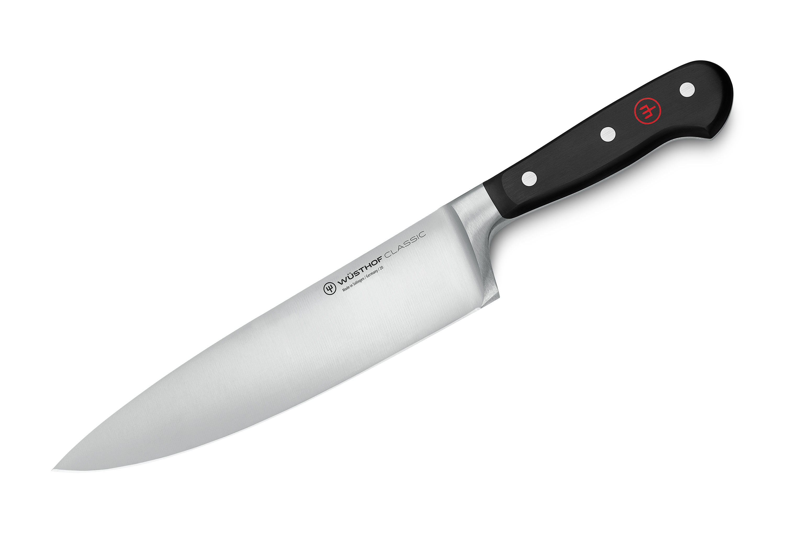

Blades have been around since man walked upon earth, since the dawn of man, monkeys carved stones into sharper stones to hunt prey, unlike bladee, blades are actually usefull, like honestly what does bladee do except rap about lean and his tinfoil grills
Bladee is known to say racist things in his songs, such as burning jews, and saying nigger, making him racist, considering the fact that blades are objects, they cannot be racist, giving them a leg up
fuck you faggot -from drain gang steam group